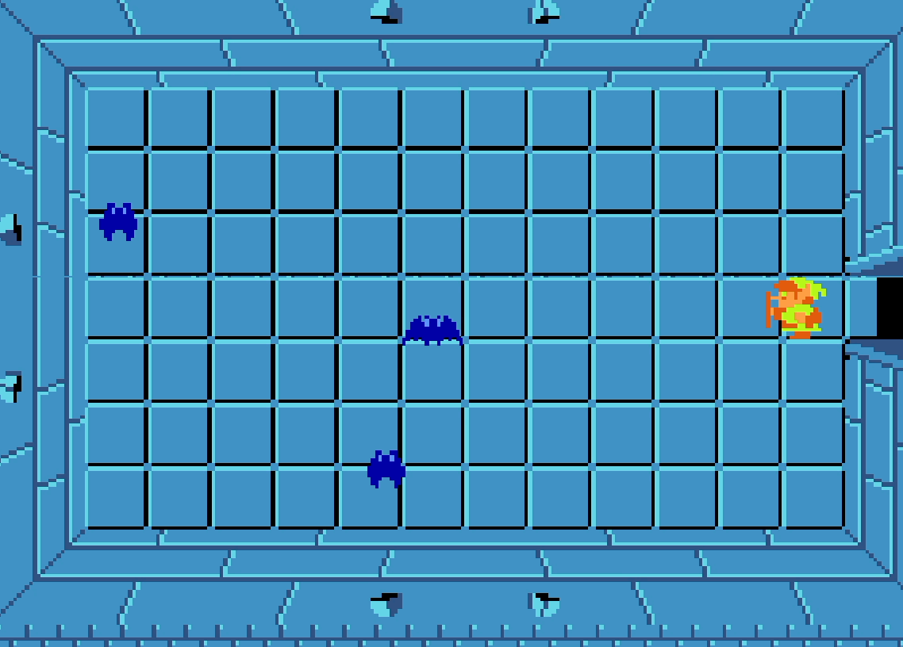
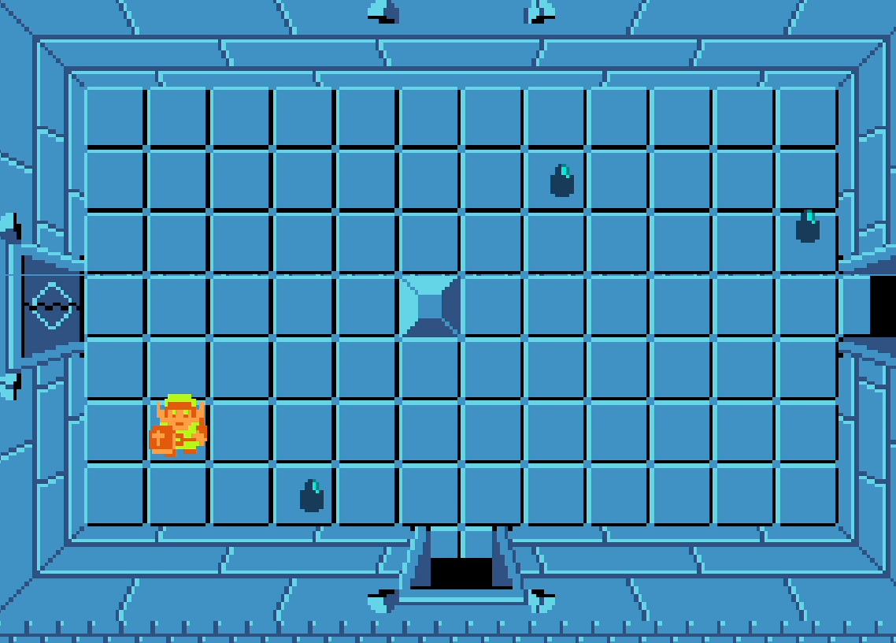
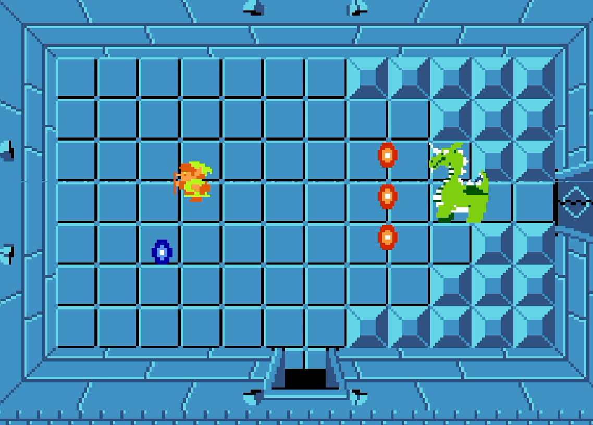
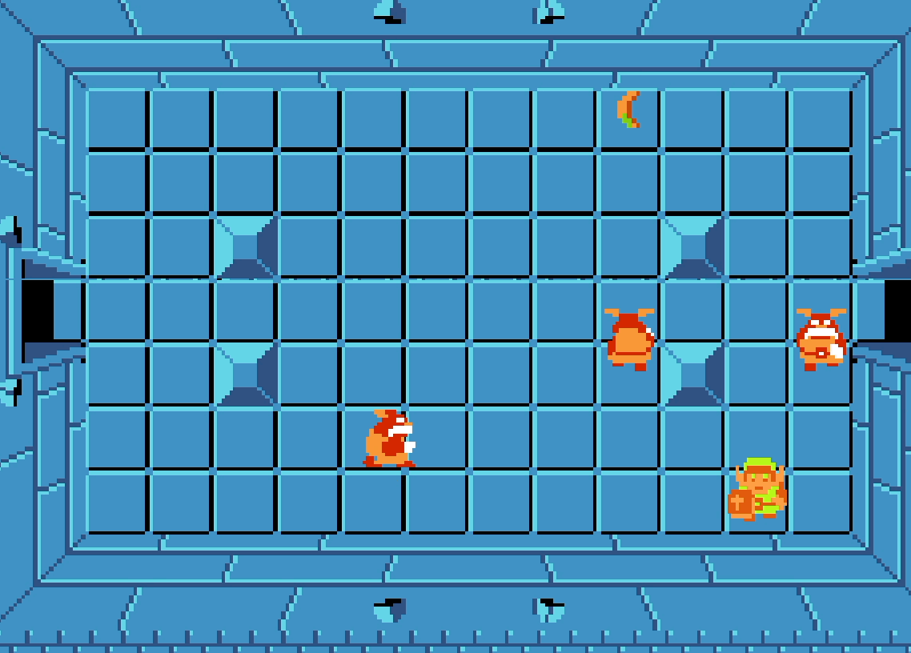
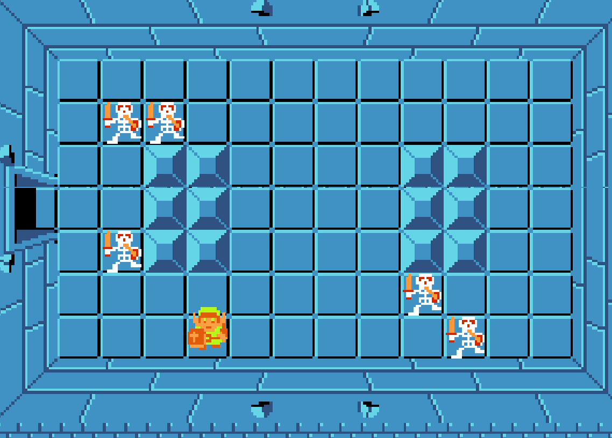
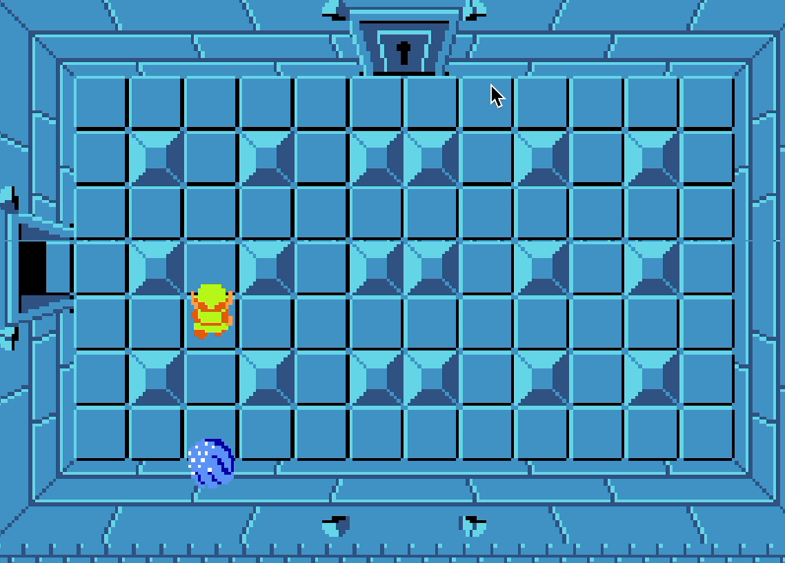
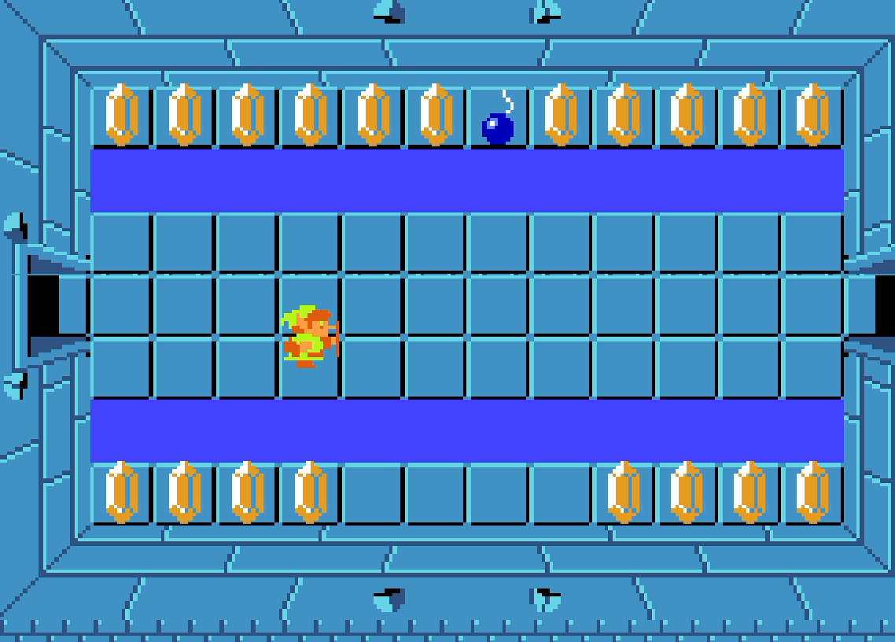
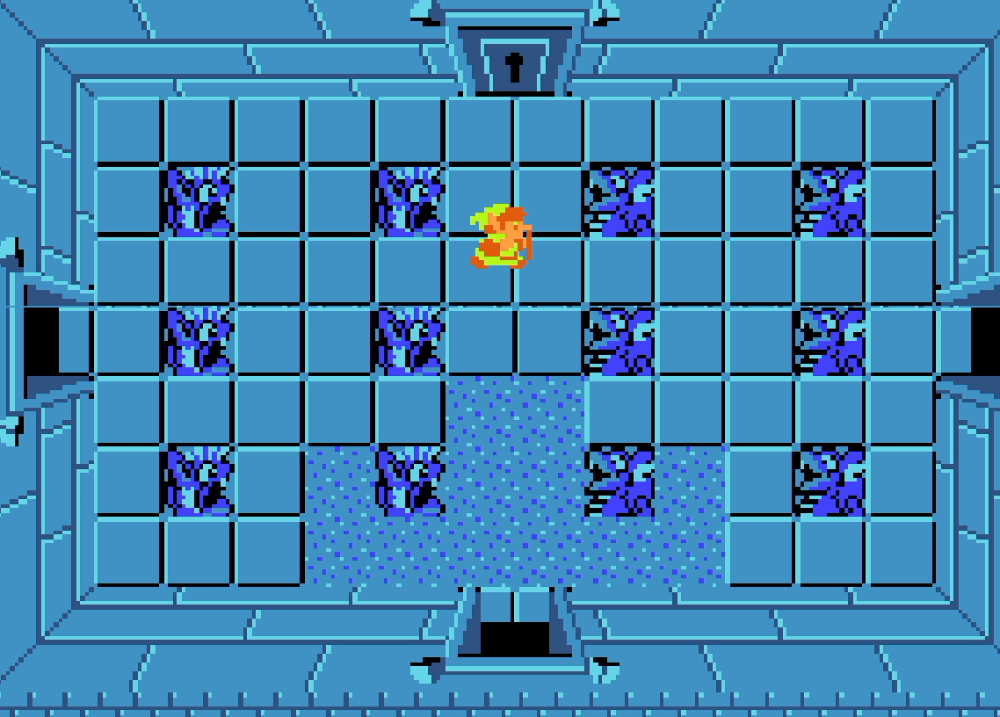
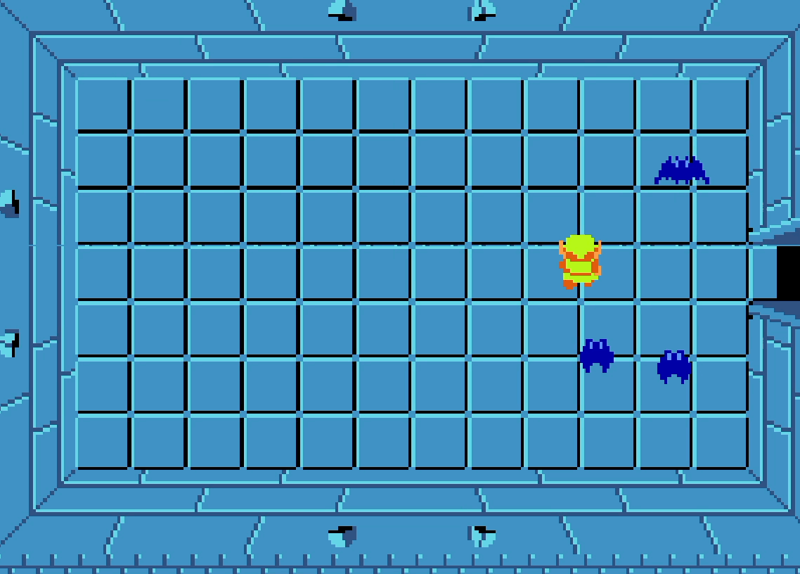
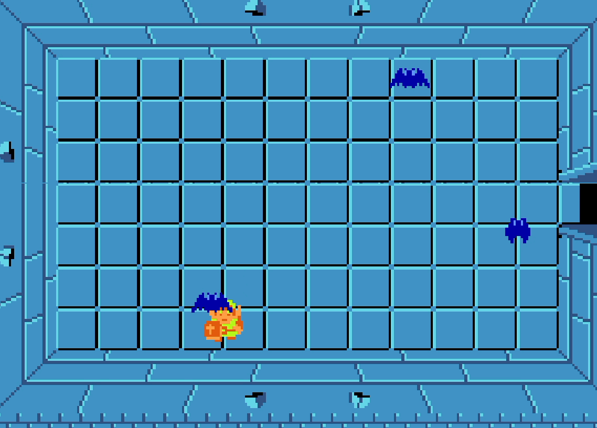

I remade most of the enemies that show up in the 1st Dungeon of the game. This includes the movement, sprite animation, as well as functionality.






To prepare for P1 Gold, I came up with a few ideas for our new mechanic. We eventually landed on the fishing rod because we thought that it would be fun to pull around enemies and fish up loot from the water. I coded the main logic. We had also originally planned to allow real fishing where the player would have to wait for a catch but decided to scrap the idea for time.

There were other smaller mechanics that I created for our team, such as locked doors and keys, room clear rewards, God Mode toggling for ease of testing, etc.



Our team used Unity and C# to remake The Legend of Zelda for the NES.